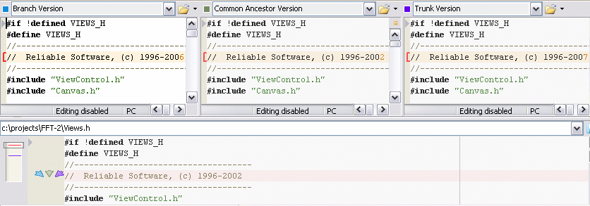

This is the merger displaying three different versions of the same file in the upper panes, and the resulting merged file in the lower pane.

In this particular case, the changes are conflicting in line 4. The common ancestor shows the copyright date as 2002. The branched script updates it to 2006, and the current project version (after accepting the winning script and maybe some more scripts) shows the date as 2007.
When there is a conflict like this, the merger has no idea which change is the right one. This is reflected in the result showing the unmodified line taken from the ancestor version. The user has the option of modifying this choice: note the three arrows in the left margin. If you click on the left (blue) arrow, the line from the left pane will be copied to the result. If you click the right (purple) arrow, the right-pane line will be copied. You can also edit the line directly.
Another thing visible in the left margin is the simplified view of the file showing the relative positions of changed lines. The conflicts are marked in red.
Conflicting lines have to be reviewed by the user, since there is no way the merger can merge them correctly. Other changes are usually merged intelligently, but it still makes sense to review them. The automatic merge option does the intelligent merging without opening up the visual merger, but it will fail if there are real conflicts, like the one in the current example.